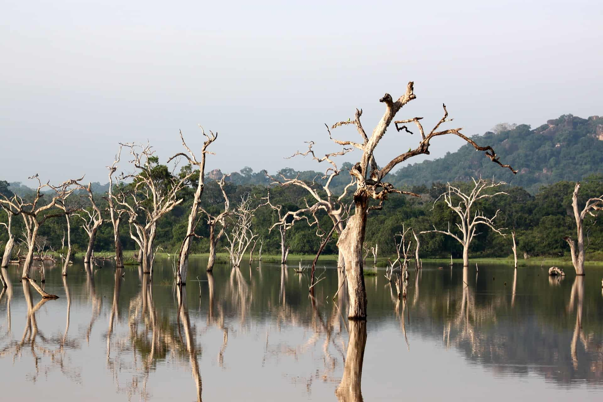
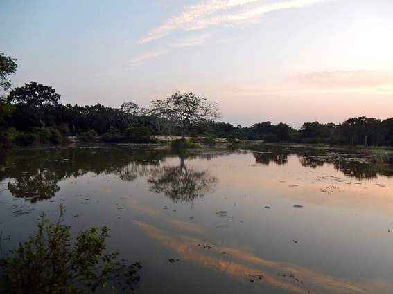
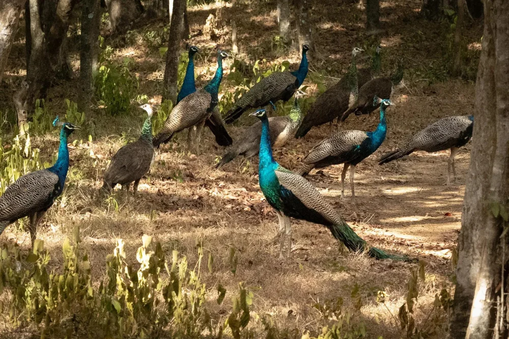
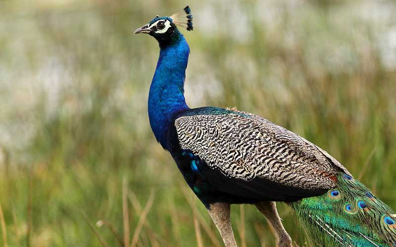
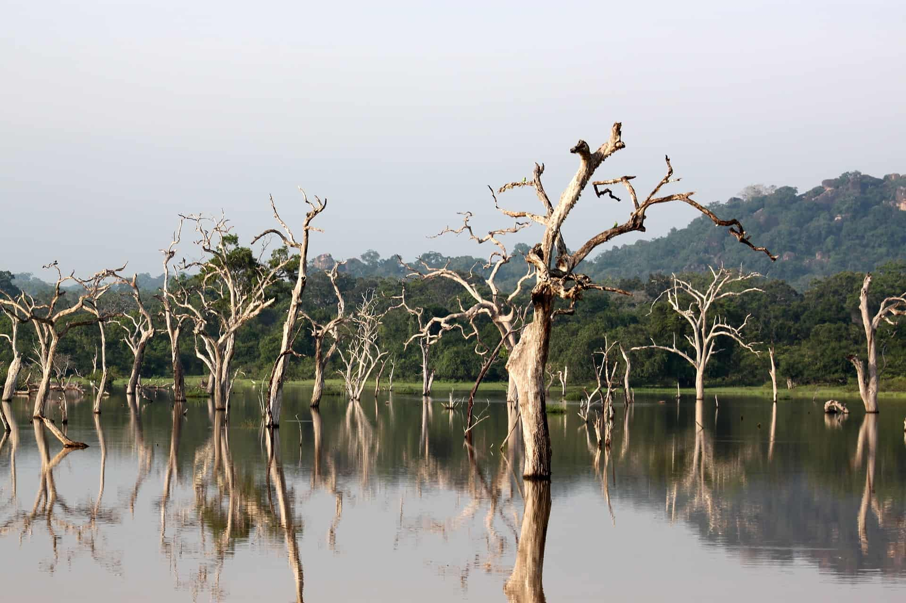
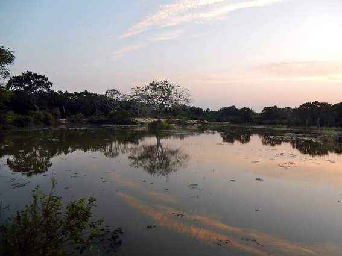
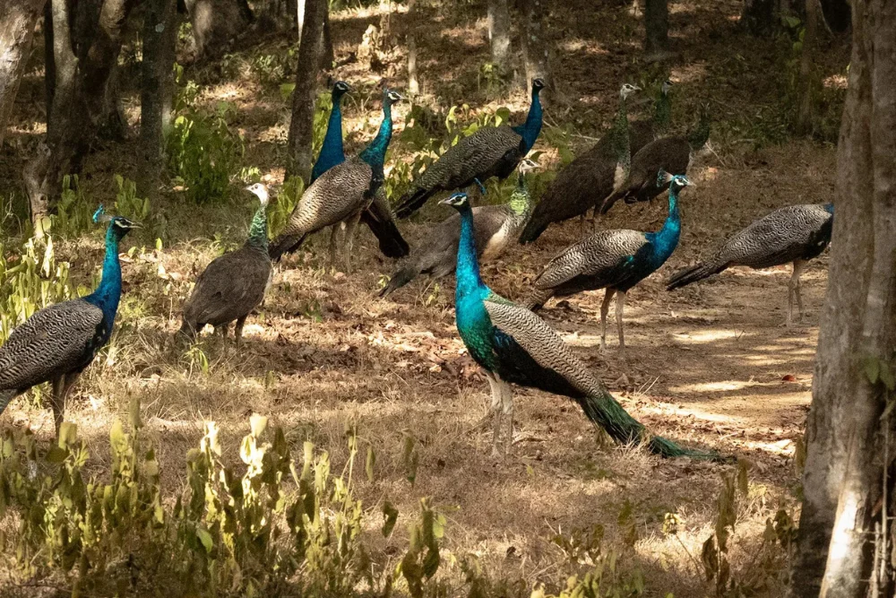
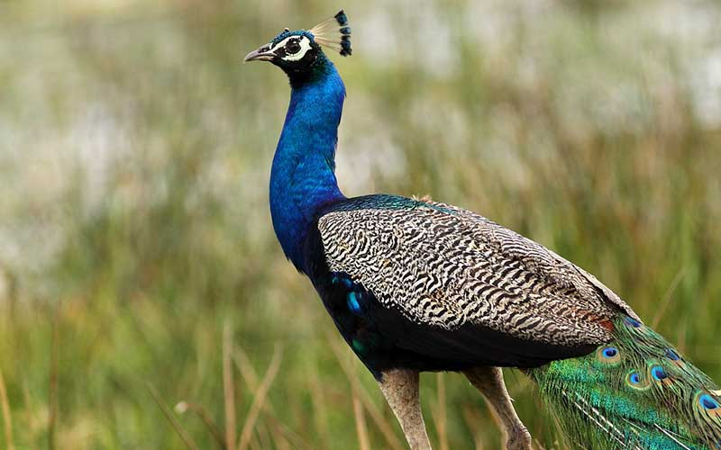
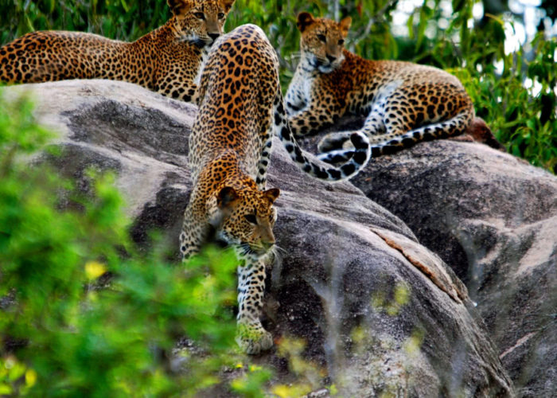
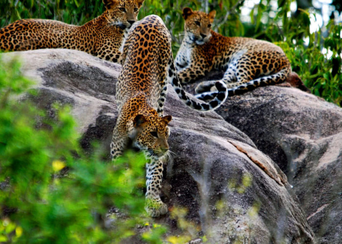

Wilpattu National Park
ABOUT
Situated in northwest Sri Lanka, Wilpattu National Park spans 131,000 hectares and features a variety of landscapes, including open grasslands, shimmering lakes, and dense forests. A variety of wildlife, including the Sri Lankan leopard, sloth bears, elephants, spotted deer, water buffalo, and several bird species, can be found in this biodiverse haven, which supports a thriving ecosystem. Wilpattu's name, which alludes to "natural lakes," confers cultural significance in addition to its ecological richness.
SAFARI CAMPING
Sri Lankan Expeditions is a Wilpattu-based expert in facilitating safari game drives and custom safari tours. For all of your needs arranging Wilpattu safari tours, we are the only company you need to contact. Our staff of wildlife specialists and photographers frequently visit Wilpattu and are familiar with the area.
HISTORY
Wilpattu National Park, steeped in history and natural beauty, offers not just a wildlife sanctuary but also glimpses into ancient civilizations. The park features several archaeological sites, including ruins and remnants dating back to Sri Lanka's rich cultural heritage.Visitors can explore these archaeological marvels, such as ancient reservoirs, man-made tanks, and intricately carved stone pillars.

 







 
